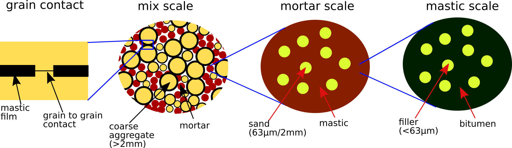
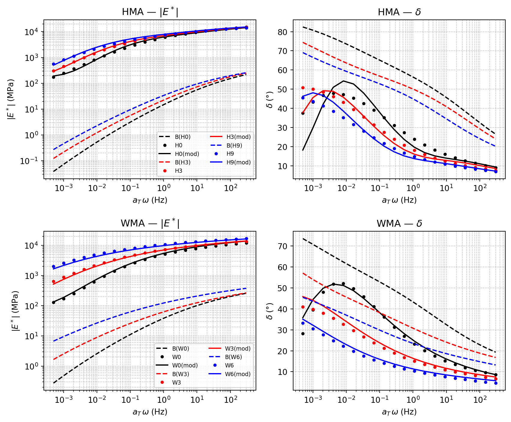

import cmath
import math
import numpy as np
import nlopt
from echoes import (
stiff_Enu, stiff_kmu, tZ4,
rvec, ellipsoidc, spheroidal, sphere_nlayersc,
homogenize, ISO, MT, SC,
)
import matplotlib.pyplot as plt
RTD = 180.0 / math.pi24 Viscoelastic properties of a bituminous mixture
Multi-scale microstructure
The bituminous mix is decomposed into three nested scales as shown in Fig. 24.1.

At scale 1 the mastic consists of bitumen (viscoelastic) embedding mineral fillers (elastic). At scale 2 the mortar is the mastic matrix with sand grains. At scale 3 the full mix adds coarse aggregates (6/10, 4/6, 2/4 mm fractions) coated by a thin mastic film plus air voids. The Mori-Tanaka scheme is used at scales 1–2 (clear matrix/inclusion morphology); the self-consistent scheme is used at scale 3 (grain–skeleton interactions).
2S2P1D viscoelastic model
The bitumen complex Young’s modulus is described in the Laplace domain (\(p = i\omega\)) by the 2S2P1D model (Somé et al., 2022):
\[ E^*(p) = E_0 + \frac{E_\infty - E_0}{1 + \delta\,(p\,\tau_E)^{-k} + (p\,\tau_E)^{-h} + (p\,\beta\,\tau_E)^{-1}} \]
class Mod2S2P1D:
"""2S2P1D viscoelastic model — callable as E_b(p) in the Laplace domain."""
def __init__(self, Eo, Einf, delta, tauE, k, h, beta):
self.Eo = Eo; self.Einf = Einf; self.delta = delta
self.tauE = tauE; self.k = k; self.h = h; self.beta = beta
def __call__(self, p):
return self.Eo + (self.Einf - self.Eo) / (
1.0
+ self.delta * (p * self.tauE) ** (-self.k)
+ (p * self.tauE) ** (-self.h)
+ 1.0 / (p * self.beta * self.tauE)
)The parameters below are calibrated from DSR measurements on the binders extracted from each mixture at each ageing state (Somé et al., 2022):
2S2P1D parameters — binders and mixes (HMA and WMA)
# ── HMA binders ────────────────────────────────────────────────────────────
E_BH0 = Mod2S2P1D(1e-07, 1000., 2.2, 1.94507827e-03, 0.22, 0.63, 50.)
E_BH3 = Mod2S2P1D(1e-07, 1000., 2.12, 2.88910275e-03, 0.22, 6.11998586e-01, 146.)
E_BH9 = Mod2S2P1D(1e-07, 1000., 2.85, 7.07911122e-03, 0.22, 6.14302550e-01, 178.)
# ── WMA binders ────────────────────────────────────────────────────────────
E_BW0 = Mod2S2P1D(1e-07, 1000., 3.12, 9.49532017e-03, 0.22, 6.08684147e-01, 101.)
E_BW3 = Mod2S2P1D(6.81e-06, 1000., 4.2, 3.209694e-02, 0.22, 5.5078753664e-01, 393.)
E_BW6 = Mod2S2P1D(2.1e-04, 1000., 4.6, 3.78112337e-01, 0.22, 5.55320631e-01, 808.)
# ── Experimental mix master curves (2S2P1D fit of measurements) ────────────
# HMA
E_EH0 = Mod2S2P1D(86.3470095, 26000., 2.52254414, 0.834764484, 0.22, 0.65, 43.3031679)
E_EH3 = Mod2S2P1D(20., 24362., 2.6, 2.6604, 0.199, 0.65, 900.)
E_EH9 = Mod2S2P1D(20., 24470.541, 2.73135009, 4.95748334, 0.175991713, 0.60, 900.)
# WMA
E_EW0 = Mod2S2P1D(100., 21071., 2.4, 0.95, 0.207, 0.62, 9.45)
E_EW3 = Mod2S2P1D(57., 20974., 2.6, 7.3168, 0.199, 0.59, 900.)
E_EW6 = Mod2S2P1D(100., 2.229e4, 2.6, 89.095, 0.199, 0.59, 900.)
E_B_HMA = [E_BH0, E_BH3, E_BH9]; E_E_HMA = [E_EH0, E_EH3, E_EH9]
E_B_WMA = [E_BW0, E_BW3, E_BW6]; E_E_WMA = [E_EW0, E_EW3, E_EW6]Composition and volume fractions
The mix formula (same for HMA and WMA) is:
compo_agg = {"6/10": 0.2752, "4/6": 0.1617, "2/4": 0.1474,
"sand": 0.32285, "fines": 0.0872} # mass fractions in granular skeleton
size_agg = {"6/10": 8.15, "4/6": 5.15, "2/4": 3.0} # mean diameter (mm)
fmas = {"bitume": 0.054} # bitumen mass fraction in the mix
fvol0 = {"pore": 0.06} # air voids volume fraction
rho = {a: 2670. for a in compo_agg} # aggregate density (kg/m³)
rho["bitume"] = 1040.; rho["pore"] = 0.
for a in compo_agg:
fmas[a] = (1 - fmas["bitume"]) * compo_agg[a]
v = sum(fmas[a] / rho[a] for a in fmas)
for a in fmas:
fvol0[a] = (1 - fvol0["pore"]) * fmas[a] / rho[a] / v
print("Volume fractions (%)")
for a, f in fvol0.items():
print(f" {a:8s}: {f*100:.2f}")Volume fractions (%)
pore : 6.00
bitume : 12.07
6/10 : 22.67
4/6 : 13.32
2/4 : 12.14
sand : 26.60
fines : 7.18Three-scale homogenization
The homogenization function takes the contact parameters \((\alpha, \chi, k_t)\) and the binder model as inputs and returns a function \(p \mapsto E^*(p)\):
- \(\alpha\): scales the Duriez mastic film thickness \(e = \alpha \cdot \delta_0 \cdot r_a^{\beta_0}\) around each aggregate.
- \(\chi\): mixing coefficient between pure mastic stiffness (\(\chi=1\)) and a contact-stiffened contribution (\(\chi<1\) ↔︎ grain–skeleton connexity at low frequency).
- \(k_t\): out-of-plane stiffness of the grain–grain contact layer (MPa/mm).
Function Ehom_kcst() — three-scale homogenization
mod_agg = 9.5e4 # aggregate elastic modulus (MPa)
nu_agg = 0.17
beta0 = 0.51 # Duriez exponent
def Ehom_kcst(X, E_b):
"""Return a callable p → E*(p) for the three-scale bituminous mix model."""
alpha, chi, kt = X[0], X[1], X[2]
un = 1.0 + 0.0j
Cagg = stiff_Enu(mod_agg, nu_agg)
fvol_loc = fvol0.copy()
fmastic = fvol_loc["bitume"] + fvol_loc["fines"]
# Mastic film thickness around each coarse aggregate fraction (Duriez)
e_film = {a: alpha * 61.3e-3 * (size_agg[a] * 0.5) ** beta0 for a in size_agg}
ffilm = sum(
fvol_loc[a] * ((1 + e_film[a] / (size_agg[a] * 0.5)) ** 3 - 1)
for a in size_agg
)
fvol_loc["mastic_rest"] = fmastic - ffilm
for a in size_agg:
fvol_loc[a] *= (1.0 + e_film[a] / (size_agg[a] * 0.5)) ** 3
k_B = 2500.0
mu_B = lambda p: 3.0 * k_B / (9.0 * k_B / E_b(p) - 1.0)
def f(p):
Cbitume = stiff_kmu(k_B, mu_B(p))
# ── Scale 1: Mastic (MT) ───────────────────────────────────────────
ver_m = rvec(matrix="bitume")
ver_m["bitume"] = ellipsoidc(shape=spheroidal(1.), symmetrize=[ISO],
fraction=fvol_loc["bitume"] / fmastic, prop={"C": Cbitume})
ver_m["fines"] = ellipsoidc(shape=spheroidal(1.), symmetrize=[ISO],
fraction=fvol_loc["fines"] / fmastic, prop={"C": un * Cagg})
Cmastic = homogenize(prop="C", rve=ver_m, scheme=MT)
# ── Scale 2: Mortar (MT) ───────────────────────────────────────────
fmortar = fvol_loc["mastic_rest"] + fvol_loc["sand"]
ver_r = rvec(matrix="mastic_rest")
ver_r["mastic_rest"] = ellipsoidc(shape=spheroidal(1.), symmetrize=[ISO],
fraction=fvol_loc["mastic_rest"] / fmortar, prop={"C": Cmastic})
ver_r["sand"] = ellipsoidc(shape=spheroidal(1.), symmetrize=[ISO],
fraction=fvol_loc["sand"] / fmortar, prop={"C": un * Cagg})
Cmortar = homogenize(prop="C", rve=ver_r, scheme=MT, verbose=False)
# ── Scale 3: Full mix (SC) ─────────────────────────────────────────
ver = rvec(matrix="mortar")
ver["mortar"] = ellipsoidc(shape=spheroidal(1.), symmetrize=[ISO],
fraction=fmortar, prop={"C": Cmortar})
for a in size_agg:
Cfilm = chi * Cmastic + (1 - chi) * stiff_kmu(Cagg.k, e_film[a] * kt)
ver[a] = sphere_nlayersc(
radii=[size_agg[a] * 0.5, size_agg[a] * 0.5 + e_film[a]],
fraction=fvol_loc[a],
prop={"C": [un * Cagg, Cfilm]},
)
ver["pore"] = ellipsoidc(shape=spheroidal(1.), symmetrize=[ISO],
fraction=fvol_loc["pore"], prop={"C": un * tZ4})
return homogenize(prop="C", rve=ver, scheme=SC, epsrel=1e-10, maxnb=100).E
return fContact parameter calibration
The three unknown contact parameters are calibrated by minimizing the relative distance between the multi-scale model \(E_\mathrm{mod}\) and the experimental master curve fitted with the 2S2P1D model \(E_\mathrm{2S2P1D}\):
\[ J(\alpha,\chi,k_t) = \sum_\omega \left|1 - \frac{E_\mathrm{mod}(i\omega)}{E_\mathrm{2S2P1D}(i\omega)}\right|^2 \longrightarrow \min \]
The minimization is performed for the least-aged state; a set of inequality constraints ensures that the fit quality does not degrade for the more-aged states. The COBYLA algorithm from the nlopt library is used.
COBYLA optimisation procedure
TMIN, TMAX, NB = 5e-4, 3e2, 20
tomega = np.logspace(np.log10(TMIN), np.log10(TMAX), NB)
tomegaopt = tomega.copy()
def graph(rstar, tomega):
"""Compute |E*| and phase angle arrays for a given model."""
r, phi = [], []
for omega in tomega:
z = rstar(omega * 1j)
r.append(abs(z)); phi.append(cmath.phase(z) * RTD)
return np.array(r), np.array(phi)
def run_optimization(E_B, E_E):
"""Calibrate contact parameters (alpha, chi, kt) for a set of ageing states.
Parameters
----------
E_B : list of Mod2S2P1D
Binder models for each ageing state.
E_E : list of Mod2S2P1D
Experimental mix models for each ageing state.
Returns
-------
x : ndarray, shape (3,)
Optimized [alpha, chi, kt].
"""
def J(x, grad):
print(".", end="", flush=True)
Emod = Ehom_kcst(x, E_b=E_B[0])
return sum(abs(1. - Emod(omega * 1j) / E_E[0](omega * 1j)) ** 2
for omega in tomegaopt)
def JE_Bi(x, grad, Ebi, EEi):
Emod = Ehom_kcst(x, E_b=Ebi)
res = sum(abs(1. - Emod(omega * 1j) / EEi(omega * 1j)) ** 2
for omega in tomegaopt)
return res - J(x, grad)
opt = nlopt.opt(nlopt.LN_COBYLA, 3)
opt.set_min_objective(J)
for j in range(1, len(E_B)):
opt.add_inequality_constraint(
lambda x, grad, _b=E_B[j], _e=E_E[j]: JE_Bi(x, grad, _b, _e),
1e-9,
)
opt.set_lower_bounds([1e-5, 0.7, 1e2])
opt.set_upper_bounds([1.0, 1.0, 1e5])
opt.set_ftol_rel(1e-10)
opt.set_xtol_rel(1e-10)
opt.set_maxeval(1000)
opt.set_maxtime(1000)
x = opt.optimize([0.5, 0.9, 3e3])
minf = opt.last_optimum_value()
print(f"\n J = {minf:.3e}, alpha={x[0]:.3e}, chi={x[1]:.4f}, kt={x[2]:.1f}")
return xHMA calibration
print("HMA — COBYLA calibration")
x_HMA = run_optimization(E_B_HMA, E_E_HMA)WMA calibration
print("WMA — COBYLA calibration")
x_WMA = run_optimization(E_B_WMA, E_E_WMA)Results
The contact parameters obtained from the COBYLA optimisations above are stored below for use in the plots. These values can be recomputed by evaluating the calibration cells.
# Pre-calibrated contact parameters (COBYLA results, see calibration cells above)
x_HMA = [5.866e-03, 0.9760, 6366.1] # J = 4.096e-01
x_WMA = [4.165e-02, 0.9791, 3277.7] # J = 2.393e-01Figure — HMA and WMA: model vs experiment
def plot_mix(ax_E, ax_phi, x_opt, E_B, E_E, name_b, name_e, colors):
"""Plot |E*| and phase angle for binder, experiment, and model."""
for k, (E_b, E_e, nb, ne, col) in enumerate(
zip(E_B, E_E, name_b, name_e, colors)
):
Ehom_f = Ehom_kcst(x_opt, E_b=E_b)
R_b, P_b = graph(E_b, tomega)
R_e, P_e = graph(E_e, tomega)
R_m, P_m = graph(Ehom_f, tomega)
kw = dict(color=col, linewidth=1.5)
ax_E.loglog(tomega, R_b, "--", label=f"B({nb})", **kw)
ax_E.loglog(tomega, R_e, ".", label=f"{ne}", **kw)
ax_E.loglog(tomega, R_m, "-", label=f"{ne}(mod)", **kw)
ax_phi.semilogx(tomega, P_b, "--", **kw)
ax_phi.semilogx(tomega, P_e, ".", **kw)
ax_phi.semilogx(tomega, P_m, "-", **kw)
for ax in (ax_E, ax_phi):
ax.grid(True, which="both", ls=":")
ax_E.set_ylabel(r"$|E^*|\;(\mathrm{MPa})$")
ax_phi.set_ylabel(r"$\delta\;(°)$")
for ax in (ax_E, ax_phi):
ax.set_xlabel(r"$a_T\,\omega\;(\mathrm{Hz})$")
ax_E.legend(fontsize=7, ncol=2)
colors3 = ["black", "red", "blue"]
fig, axes = plt.subplots(2, 2, figsize=(9, 7.5))
axes[0, 0].set_title("HMA — $|E^*|$")
axes[0, 1].set_title("HMA — $\\delta$")
plot_mix(axes[0, 0], axes[0, 1], x_HMA, E_B_HMA, E_E_HMA,
["H0", "H3", "H9"], ["H0", "H3", "H9"], colors3)
axes[1, 0].set_title("WMA — $|E^*|$")
axes[1, 1].set_title("WMA — $\\delta$")
plot_mix(axes[1, 0], axes[1, 1], x_WMA, E_B_WMA, E_E_WMA,
["W0", "W3", "W6"], ["W0", "W3", "W6"], colors3)
plt.tight_layout()
plt.show()
The upper panels show HMA and the lower panels WMA. In both cases the binder stiffness (dashed lines, 1–1000 MPa) is amplified by roughly three decades to reach the mix modulus (solid lines, ≈20 000 MPa at high frequency). The phase angle of the mix is systematically lower than that of the binder, reflecting the stiffening effect of the rigid granular skeleton. Both trends are captured consistently across the ageing states.